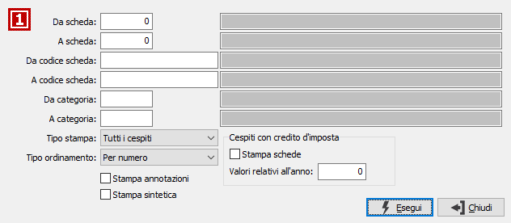

Introduzione
L'anagrafica cespiti, articolata su quattro linguette, contiene le schede relative a tutti i cespiti in possesso dell’azienda, siano essi in uso o meno. Il codice della scheda è numerico e normalmente corrisponde al numero di inventario del cespite stesso, è comunque possibile utilizzare un codice secondario alfanumerico.
Normalmente l'anagrafica viene creata all'atto della registrazione contabile dell'acquisto di un nuovo cespite. In tal caso, contestualmente all'anagrafica del cespite viene creato anche il rigo di movimento cespiti per l'acquisto. L'accesso alla tabella è necessario durante l'avviamento della procedura per memorizzare i cespiti pregressi, ovvero già esistenti all'atto dell'installazione della procedura. In questo caso, si dovrà procedere dapprima alla memorizzazione di tutte le anagrafiche e successivamente all'inserimento dei movimenti pregressi di tali cespiti.
Agendo sul pulsante Stampa oppure Anteprima della tool bar vengono richiesti i parametri per la stampa delle schede: per il significato dei vari campi si rimanda al paragrafo Stampa schede cespiti nel quale sono analizzati i limiti richiesti per la stampa ed altri parametri aggiuntivi che in questa finestra non compaiono; da questa finestra è possibile eseguire un report relativo ai crediti di imposta, spuntando l'apposita casella ed indicando l'anno sarà prodotto un report con i soli cespiti che utilizzano il credito di imposta ed i relativi valori..

La gestione delle informazioni avviene all'interno delle seguenti “linguette”: